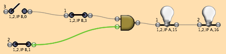
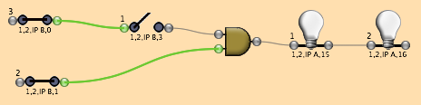
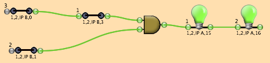

Consider the following simple chain consisting of three input switches, an AND gate, and two outputs. Input switch #1 is linked to a hardware input bit at crate1, card2, IPB channel 3. Switch #2 is linked to the same IPB module channel1, switch #3 to channel 0. Output #1 is linked to channel 15 and Output #2 to channel 16. In order for the Outputs to set their hardware bits to '1' all of the Inputs switches must read a '1' from their hardware channels.

Example 1. Switches #1 and #2 are reading 1's from their IP408 channels, but since #1 is a pass-thru the AND gate sees the value from #3 and thus is not satisfied.

Example 2. Here switches #2 and #3 are reading 1's from their IP408 channels, but the pass-thru switch #1 is blocking the signal from reaching the AND gate.

Example 3. Here all switches are reading 1's from their IP408 channels, so the AND gate passes a '1' on to Output #1. Since it is acting as a pass-thru, the signal also reads the endpoint and both outputs are able to set their IP408 bits to '1'.
Objects | Process Center | Process Container | Process Elements